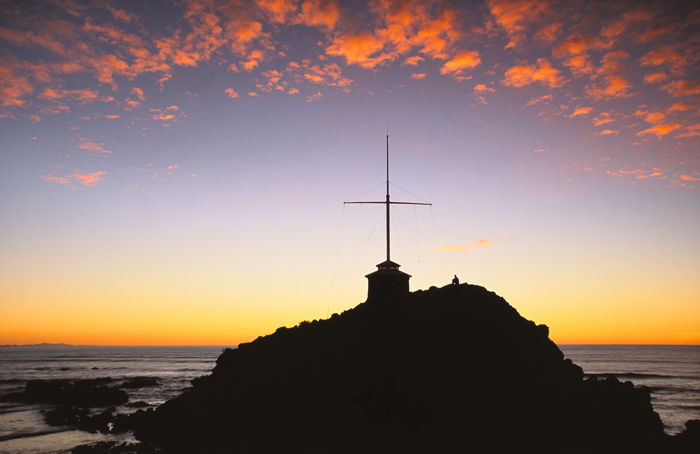

Cave Rock
Christchurch Tourist Location
Christchurch's Iconic Coastal Landmark!
Cave Rock is a well-known natural landmark located at
Sumner Beach in Christchurch. The large volcanic rock
formation sits beside the beach and contains a cave that
visitors can explore when conditions are safe. It is one
of the most recognisable features of the Sumner coastline.
Visitors can walk along the beach, explore the cave,
take photographs, and enjoy views of the surrounding
coastline. The area is also popular for swimming, surfing,
walking, and relaxing by the beach. Cave Rock is especially
interesting at low tide when visitors have better access
to the area around the rock.
Cave Rock is a good destination for visitors looking for
an inexpensive activity close to Christchurch. There is
no admission fee to visit the beach or Cave Rock, although
visitors may want to budget for food, parking, or transport.
Visitors should also take care around the rocks and check
the tide and sea conditions before exploring the cave.
Facts:
- Located at Sumner Beach in Christchurch
- Natural volcanic rock formation
- Contains a cave that can be explored
- Popular location for photography
- Surrounded by coastal scenery
- Popular for walking, swimming, and surfing
- Best explored when the tide is low
- Free to visit
Costs:
- Entry to Cave Rock: Free
- Access to Sumner Beach: Free
- Walking and sightseeing: Free
- Estimated food costs: $10-$30 per person
- Estimated transport costs: $5-$20
- Estimated total visit cost: $15-$50 per person